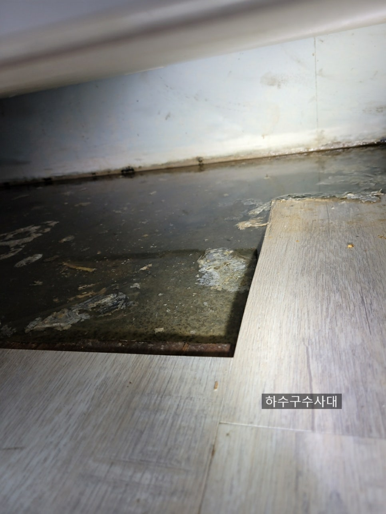
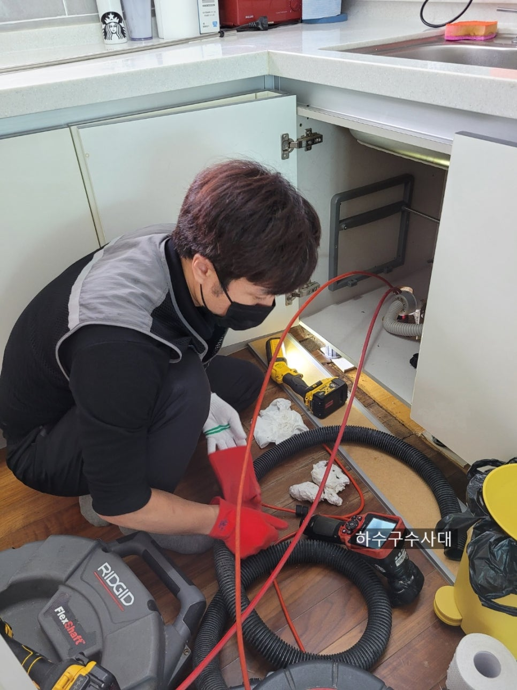
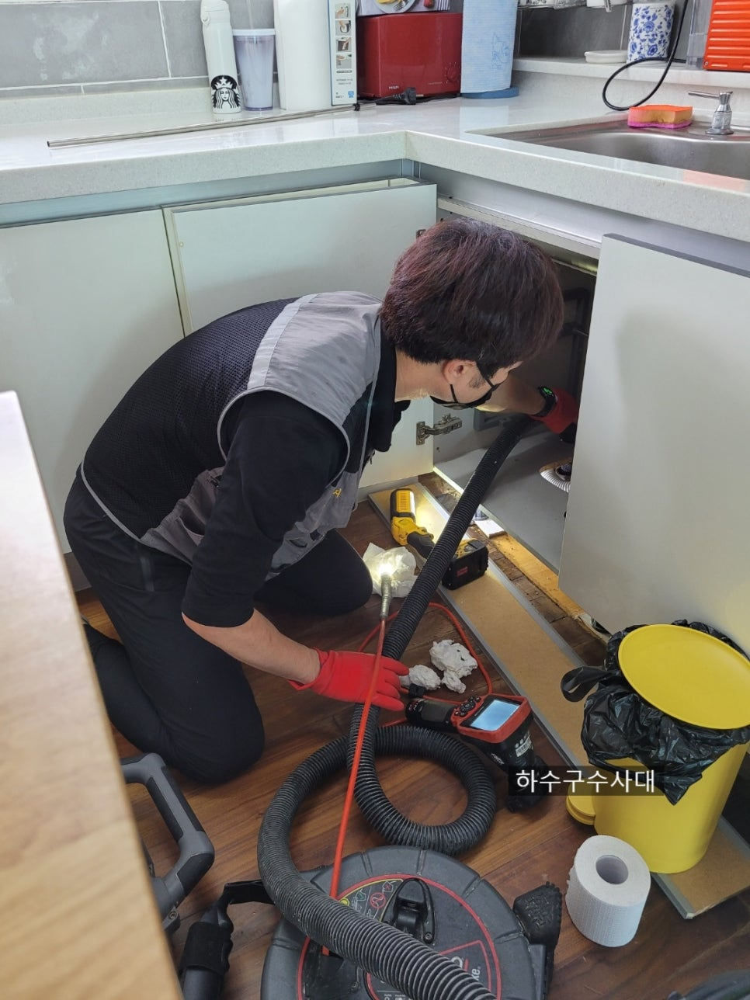
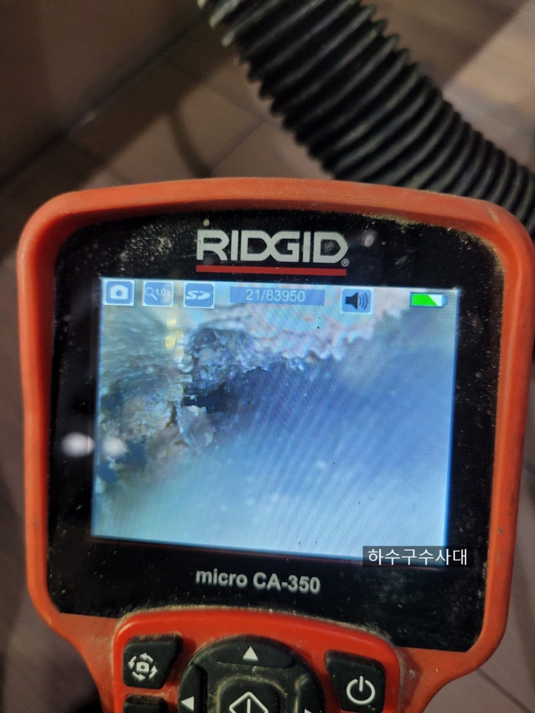
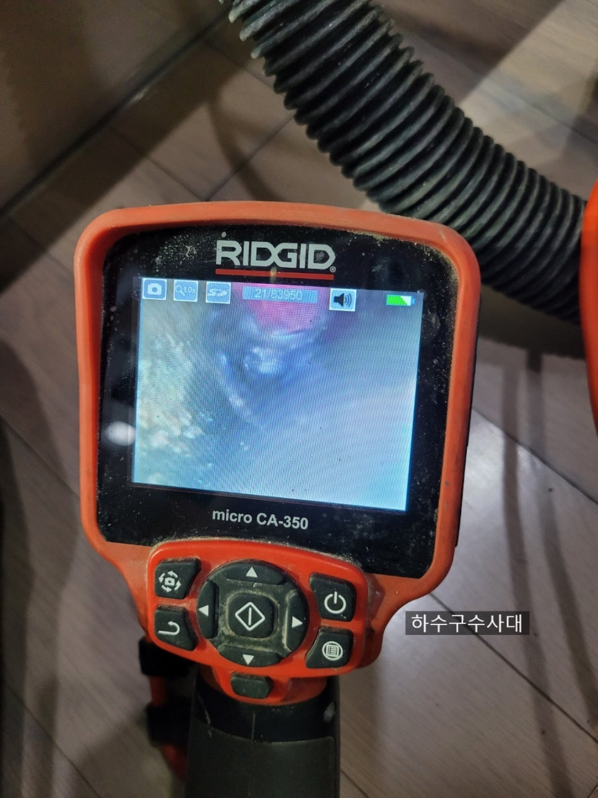
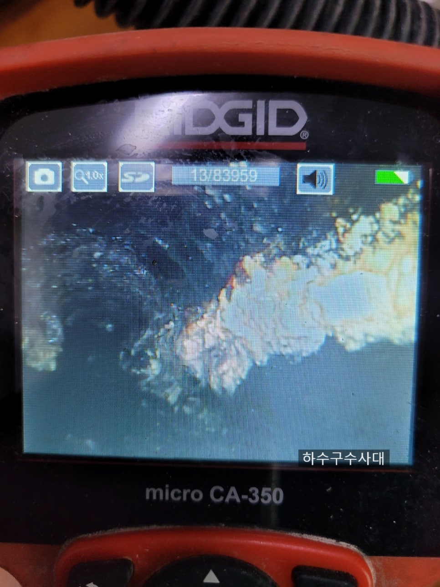
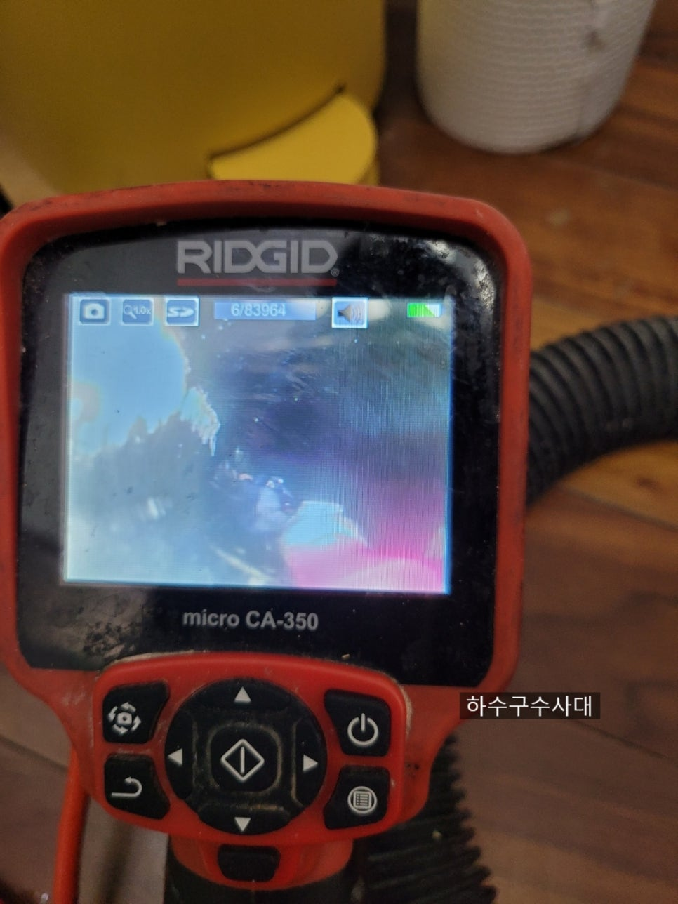

🏠 싱크대배관역류 싱크대막힘 막힘해결
서울 싱크대막힘 전문 시공 후기

📋 작업 개요
- 위치: 서울
- 서비스 유형: 싱크대막힘, 하수구막힘, 배관막힘, 누수수리, 역류해결, 뚫는업체, 배관청소, 고압세척
- 작업 일시: 2021. 8. 7. 23:23
- 업체명: 하수구수사대 (010-5615-2118)
🔍 문제 상황
안녕하세요 여러분!!
올 여름은 유난히도 더운듯 합니다.
코로나가 4단계가 연장되면서
자영업자들의 걱정은 늘어만 가는데
하루빨리 종식되길 기도해봅니다.
오늘은 싱크대배관역류 된 현장을 다녀왔습니다.
싱크대배관역류 싱크대막힘 막힘해결
싱크대를 살펴보니 겉으로는 아무런 문제가 없어보이지만
싱크대밑 걸레받이를 열어보니 많은
양의 물이 흘러나와 있습니다.
이렇게되면 마루바닥이 나무라면 변색되고 썩게되는
원인이 됩니다.
또 밑에층에 누수가 될수 있어 물이잘 안내려간다면
꼭 밑에 걸레받이를 열어서 확인해야합니다.
내시경검수
이런증상이라면 배관에 기름들이
고체화되어 약품으로는 해결하기가 어렵습니다.
아무래도 업체를 부르면 비용이 발생하게 되니
스스로 해결해보기 위해
약품을 넣는 경우가 많은데
오히려 기름덩어리가 무너져 더
막히는 증상이 나타나게 됩니다.

🔎 원인 분석
💡 전문가 진단: 하수구수사대010-2340-2118
우선 기본적으로 석션작업을 해봅니다.
단순하게 막힌건지 기름덩어리가 얼마나
고체화되어있는지 확인을 하기 위해서 입니다.
단순막힘이라면 기본석션작업으로
해결되겠지만 정확한 진단을 위해
내시경까지 꼼꼼하게 봐야합니다.
간혹 몇몇 업체는 내시경없이
스프링장비로 뚫어만 주는데
비용은 저렴할지 몰라도 1년내에
또 막힐 확률이 높아서 꼭
내시경보유업체를 선택하시길 바랍니다.
배관내부
내시경으로 배관을 들여다봅니다.
역시 기름이 너무 많습니다.
이러한 부분을 예방하기위해서
평소 설거지를 하기 전 키친타올을
이용해 기름을 제거해야합니다.
또한 펑크린같은 청소용품을
배관에 넣어 기름을 녹여주는
습관도 좋습니다.
배관세척
배관에 붙어있는 유지방덩어리를 제거하기위해
사용하는 스케일링 장비입니다.

🔧 작업 과정
앞에 체인이 돌아가면서 기름덩어리를
제거합니다.
물론 배관에 전혀 손상을 주지 않습니다.
작업중
중간중간 내시경으로 청소상태를
파악하고 부분적으로
기름덩어리가 있는곳을 보면서
제거해 줍니다.
세척작업
세척작업을 하다보면 이물질이 파쇄되어
배관에 큰 덩어리가 있으면
석션기를 통해 뽑아내는 작업도 병행합니다.
파쇄하고 있습니다.
작업사진
저희 하수구수사대는 AS가 나지 않도록
꼼꼼하게 작업을 진행하고
혹시나 같은 배관에 문제가 생긴다면
1년간 AS를 해드리고 있습니다.
하지만 보통 배관세척을하고
관리요령대로만 사용하신다면
평생 쓰셔도 막힐일이 없습니다^^
세척후
배관에 기름덩어리들을 모두
제거하였습니다.
이렇게 깨끗해야 저희도 뿌듯하고
고객님들께서도 안심을 하십니다^^
마지막으로 물이
잘내려가는지 테스트를 해주는 작업입니다.
배관이 텅텅 비어있다면 내려가는 소리부터가
꼬르륵~~하면서
통쾌한 소리가 납니다^^
아무래도 요즘 식생활이 서구화되면서
가정내에서 기름진 음식을
많이 드시는게 사실입니다.
설거지를 하면서 기름을 100%
제거하지 않는이상


✅ 작업 완료
배관에 기름이 조금씩쌓여
고체화되기전에 관리를 해줘야 합니다.
코로나때문에 더욱 힘든 여름입니다.
무더위에 지지 말고 모두
화이팅하시기 바랍니다^^
저희 하수구수사대는 서울/경기/인천
당일 원하는 시간에 방문하고 있으니
궁금하신점은 유선으로 연락바랍니다^^
하수구수사대
010-2340-2118




⚠️ 베란다 누수 및 방수 관리 방법
- ✅ 비가 많이 올 때 창틀 주변이나 아래층 천장에 얼룩이 생기는지 정기적으로 확인해 보세요.
- ✅ 우수관 주변 실리콘 마감이 들뜨거나 깨진 틈새가 있는지 손상 여부를 수시로 체크하세요.
- ✅ 베란다 바닥 타일의 줄눈(메지)이 소실되면 그 틈으로 물이 침투하여 누수가 유발됩니다.
- ✅ 누수 의심 증상 발견 시 방치하면 아래층 손실이 커지므로 즉시 전문가의 진단을 받으십시오.
💡 핵심 정리
- 확실한 장비 작업(내시경 점검 및 샤프트 스케일링)으로 원인을 뿌리 뽑습니다.
- 작업 후 1년 이내에 동일한 부위 재발 시 100% 무상 A/S 서비스를 보장합니다.
- 서울 · 경기 · 인천 전 지역에 24시간 언제든 긴급 출동할 수 있도록 항시 대기 중입니다.
❓ 자주 묻는 질문 (FAQ)
🚨 서울 싱크대막힘 문제로 고민이신가요?
정확한 원인 진단과 확실한 시공으로 재발 없는 해결을 약속드립니다.
24시간 긴급 출동 | 서울 · 경기 · 인천 전지역 | 1년 내 재발 시 무상 A/S